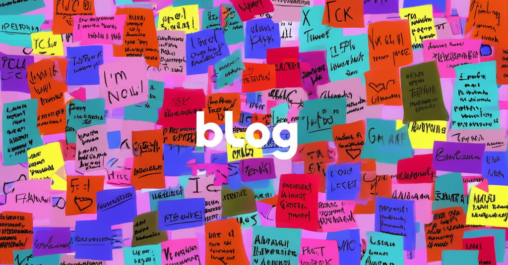

# 2025年的信息速覽：大阪世博、科技、教育與財經動態
引言：
本文彙集了近期網絡上關於2025年的重要信息，涵蓋大阪世博會的籌備情況、台灣在世博會中的角色、財經行事曆、教育機構動態以及AI社群活動等方面。透過對這些信息的整理，希望能讓讀者快速掌握2025年可能發生的重要事件和趨勢。
## 主體內容
### 第一點：2025大阪世博會與台灣的參與
2025年大阪世博會備受矚目，台灣將以「Tech World」為主題參與，吸引許多人關注。Bella.tw的文章整理了必逛場館、門票和交通資訊，為計劃前往參觀的人提供實用信息。
### 第二點：財經與教育機構動態
Anue鉅亨的頭條新聞提供了財經日曆，標記了2025年4月17日至4月27日的重要事件。經濟日報也發布了4月29日的重要財經行事曆，包含台灣主計總處發布的2023年國富毛額等。在教育方面，元智大學、國立臺灣科學教育館、嘉新國中和高雄市立楠梓高中等機構都發布了各自的活動資訊或行事曆，反映了教育界的日常運作和活動安排。國立臺灣科學教育館舉辦科學展覽會，鼓勵學生展現科學才能。成功大學的全校活動資訊系統也提供了企業參訪等活動訊息。楠梓高中則整理了升學落點分析的網站資源。
### 第三點：AI社群與技術發展
臉書上關於2025 Generative AI社群小聚的文章揭示了AI技術的發展趨勢，提到客製化時代的來臨，以及如何應用n8n.io 和zeabur等工具。內容提到客製新聞摘要和編輯細節後台的建立，顯示AI在資訊處理和個性化服務方面的應用。
## 結論
2025年將是充滿變革和發展的一年。大阪世博會為各國展示科技和文化提供了平台，而台灣的參與更值得期待。財經日曆和教育機構的活動資訊為我們規劃未來提供了參考。AI技術的快速發展也將持續影響各個領域。這些信息共同描繪出2025年的初步輪廓，讓我們對未來充滿期待。